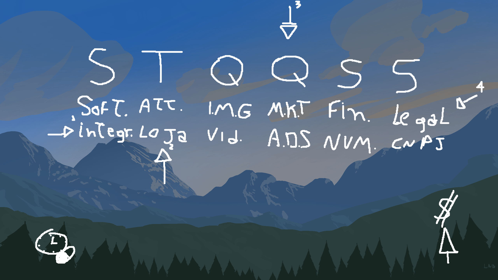

Produto com propósito
Remédio Certo e Respira nasceram de situações cotidianas: organizar medicamentos e apoiar momentos de ansiedade.
Desenvolvedor de software · Ribeirão Preto, SP
Desenvolvimento mobile, integração Android nativa e experiências web — do protótipo ao produto publicado, com ciclos curtos de evolução.
01 / Sobre
Sou desenvolvedor de software com formação em Análise e Desenvolvimento de Sistemas e prática concentrada em produtos mobile. Meus projetos mais completos passam por descoberta do problema, implementação, publicação, suporte e melhoria contínua.
Remédio Certo e Respira nasceram de situações cotidianas: organizar medicamentos e apoiar momentos de ansiedade.
Separação de responsabilidades, integração Flutter–Android, persistência local, serviços em background e Firebase quando o produto pede.
IA entra no fluxo como pair programmer e agente de apoio. Decisões de produto, testes, validação e responsabilidade final continuam comigo.
02 / Projetos
Projetos apresentados conforme a maturidade encontrada no código, na documentação e nas lojas — sem nivelar um estudo ao mesmo patamar de um produto publicado.
Assistente offline para organizar medicamentos e reduzir confusões no horário da dose por meio de alarmes em tela cheia, fotos e identificação visual.

Arraste para navegar
Aplicativo de apoio para momentos de ansiedade e estresse, combinando respiração guiada, registro de crises, histórico e sons relaxantes.
Arraste para navegar
Projetos acadêmicos e experimentais
Escopo menor, contexto explícito e aprendizados visíveis.
TCC em Flutter que explora descoberta de receitas a partir dos ingredientes disponíveis, autenticação e listas de compras por usuário.
Engenharia verificada: rotas centralizadas, páginas por domínio, serviço Firebase, validação de formulários, autenticação por e-mail/telefone e atualização em tempo real com Firestore.
O código auditado está na versão 0.1.0 e ainda possui rotas e navegações previstas sem implementação; por isso, é apresentado como protótipo.
Código analisado em repositório privado
Arraste para navegar
Quiz coletivo para grupos, com participantes dinâmicos, rodadas cronometradas, placar, ranking e cálculo lúdico de “QI coletivo”.
Engenharia verificada: estado manual, três fluxos de tela, carregamento assíncrono de JSON com fallback, pré-carga de imagens, timer, pontuação e integração com o Discord Embedded App SDK.
Arraste para navegar
03 / Tecnologias
O agrupamento abaixo distingue tecnologias aplicadas em produto, protótipos e trilhas de aprendizagem.
04 / Trajetória
Experiência profissional
2022 — 2025
Produto independente
Do suporte ao produto
As lojas e páginas públicas registram o ciclo pós-publicação: canal de suporte, leitura de avaliações, resposta a feedback, correções de bugs, estabilidade e novas versões.
05 / Processo
Uma dinâmica iterativa, inspirada em Extreme Programming: feedback rápido, entregas pequenas, revisão constante e espaço para mudar de direção com evidência.
IA no desenvolvimento
ChatGPT, Codex e Gemini apoiam implementação, debugging, refatoração, documentação e pesquisa técnica nos projetos mais complexos. A definição do produto, a arquitetura, os testes, a validação das integrações e a decisão de publicar permanecem sob minha responsabilidade.
06 / Contato
Estou aberto a oportunidades de estágio, nível júnior e posições iniciais em desenvolvimento de software.
contatocarger@gmail.com